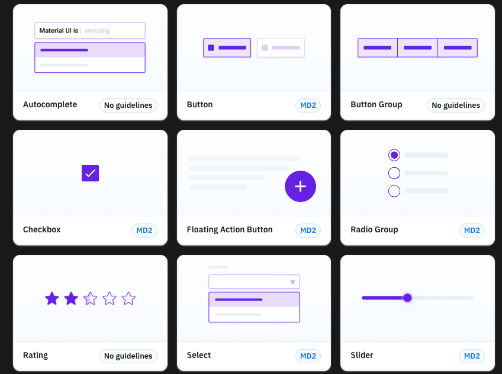
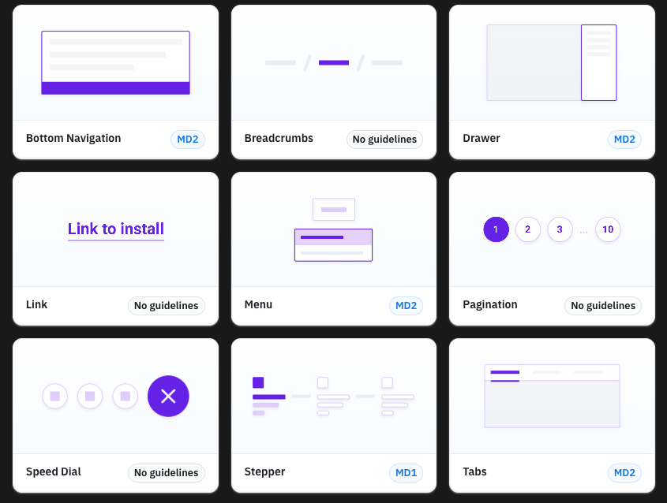
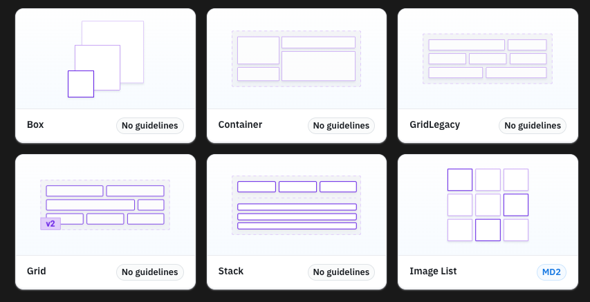
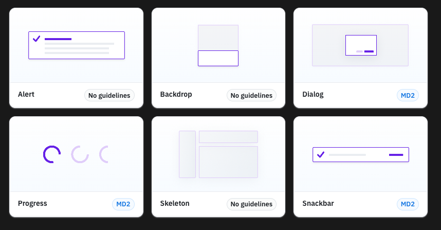
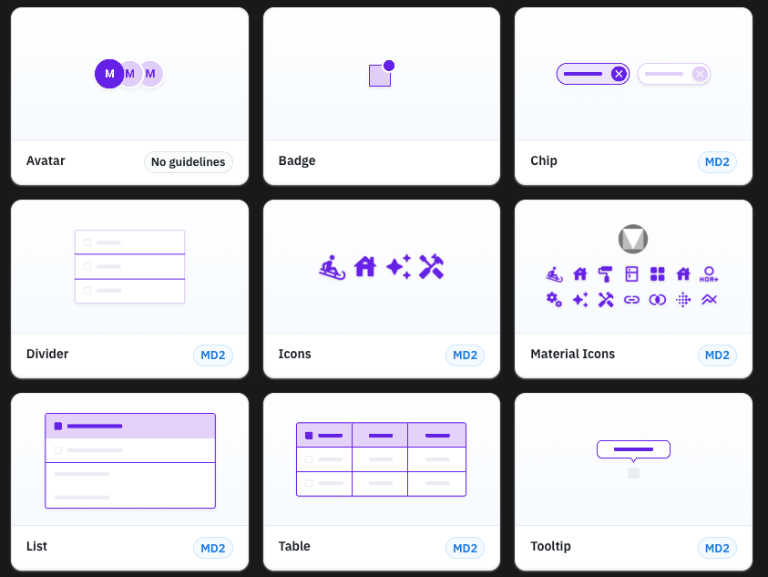
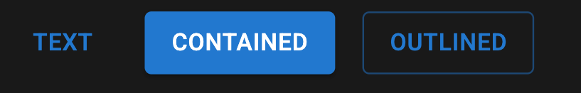
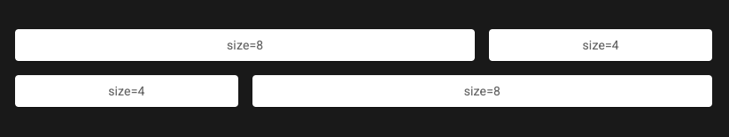

A Modern React UI Framework
Material UI (MUI) is a popular React-based UI framework that implements Google's Material Design system.
To start using Material UI in your React project, install it with npm:
npm install @mui/material @emotion/react @emotion/styledor with yarn:
yarn add @mui/material @emotion/react @emotion/styledMaterial UI offers a rich set of components that help you build beautiful, consistent user interfaces:





Material UI provides powerful form elements like TextField, Checkbox, Radio, and Select.
import TextField from '@mui/material/TextField';
function FormExample() {
return (
<form>
<TextField label="Standart" variant="standard"/>
<TextField label="Filled" variant="filled" />
<TextField label="Outlined" variant="outlined" />
</form>
);
}
Buttons are one of the most common components in any app. MUI provides several button types:
import Button from '@mui/material/Button';
function MyApp() {
return (
<div>
<Button variant="text">Text</Button>
<Button variant="contained">Contained</Button>
<Button variant="outlined">Outlined</Button>
</div>
);
}

Material UI’s Grid components help you create responsive and flexible layouts:
<Grid container spacing={2}>
<Grid size={8}>
<Item>size=8</Item>
</Grid>
<Grid size={4}>
<Item>size=4</Item>
</Grid>
<Grid size={4}>
<Item>size=4</Item>
</Grid>
<Grid size={8}>
<Item>size=8</Item>
</Grid>
</Grid>

Material UI allows you to customize the theme globally to match your branding:
import { createTheme, ThemeProvider } from '@mui/material/styles';
const theme = createTheme({
palette: {
primary: {
main: '#1976d2',
},
secondary: {
main: '#dc004e',
},
},
});
function MyApp() {
return (
<ThemeProvider theme={theme}>
<App />
</ThemeProvider>
);
}
Material UI is optimized for performance, but you can further optimize your app by:
Material UI components are designed with accessibility in mind:
Material UI is a powerful tool for building modern React applications with a polished, consistent look and feel.
Any Questions?
Contact me here